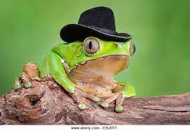

Rana es un género de anfibios anuros de la familia Ranidae, que habita en Eurasia templada hasta Indochina.1 Las especies de este género se caracterizan por sus cinturas delgadas y la piel rugosa, muchas poseen finas estrías que recorren la espalda aunque sin las verrugas típicas de los sapos. Son excelentes saltadoras debido a sus largas y delgadas patas traseras. La membrana interdigital típica de sus pies posteriores les permite una natación fácil. Suelen ser de color verde o marrón con manchas negras y amarillentas por el dorso y más pálidas por el vientre. Muchas de las ranas de este género crían a principio del verano, aunque las especies tropicales y subtropicales lo hacen durante todo el año. Los machos de la mayoría de las especies croan pero se cree que los de unas pocas son mudos. Las hembras desovan formando grandes masas o agregados globulares, alcanzando puestas de hasta veinte mil huevos.
